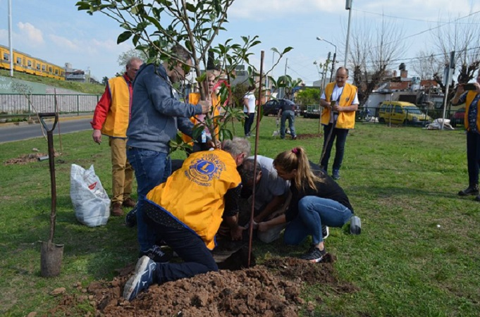
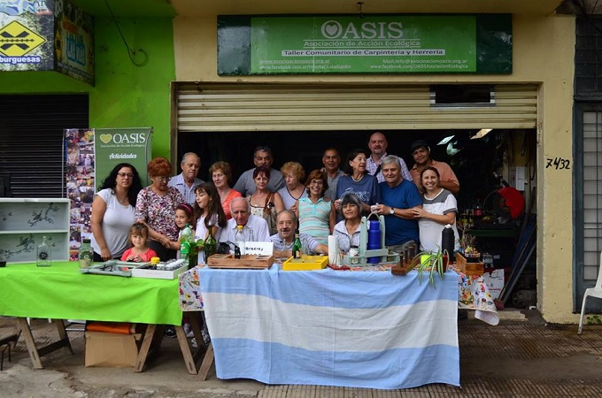
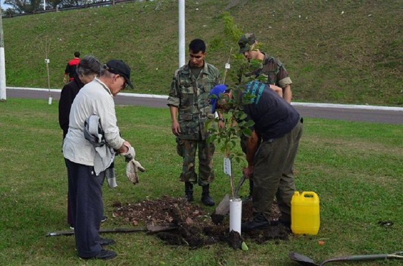
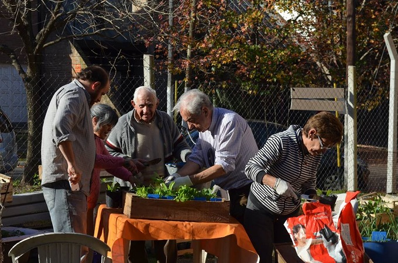
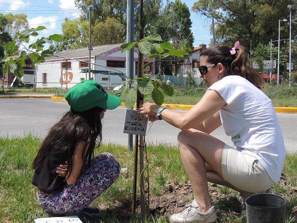
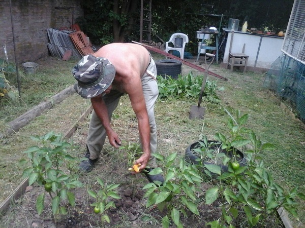
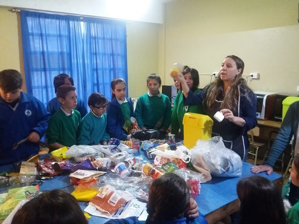

Unete a nuestra tarea como voluntario! ¿Cómo?
Sumándote como socio mediante una cuota muy accesible.

Unete a nuestra tarea como voluntario! ¿Cómo?
Juntando y/o acercando material reciclable como botellas de vidrio, botellas de plásticos, tapitas de plásticos, papeles etc.

Unete a nuestra tarea como voluntario! ¿Cómo?
Juntando y/o acercando ropa usada (en buenas condiciones), libros usados, muebles usados etc.

Unete a nuestra tarea como voluntario! ¿Cómo?
Organizando talleres de la especialidad que tengas, algún oficio, música, arte, computación etc.

Unete a nuestra tarea como voluntario! ¿Cómo?
Participando de las actividades que desarrollamos año tras año.

Unete a nuestra tarea como voluntario! ¿Cómo?
Haciendo conocer nuestra asociación y poder sumar a otros trabajar en este sueño.
